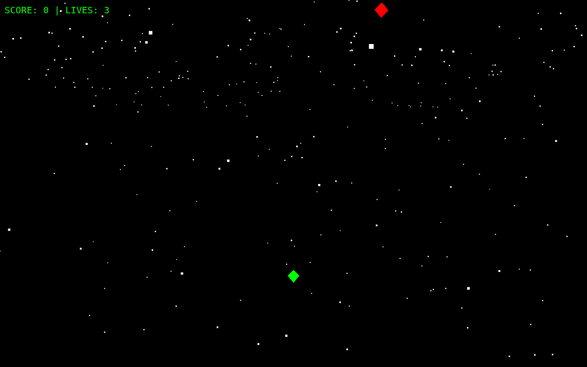
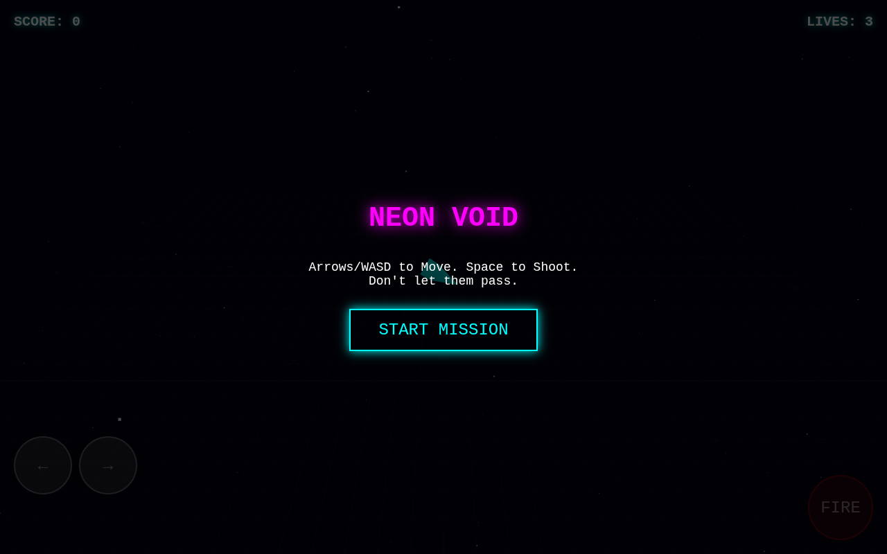
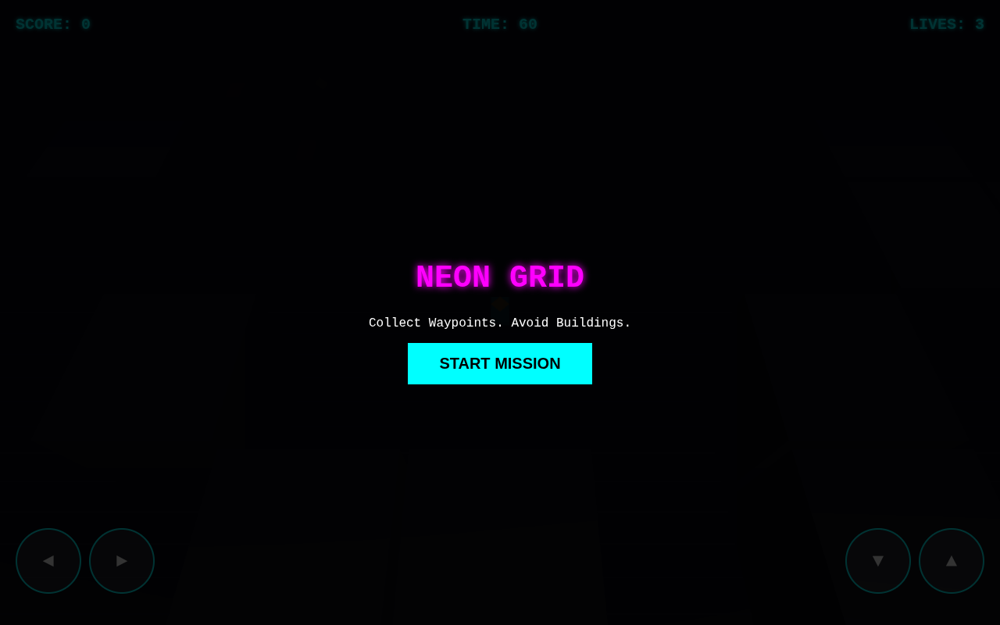
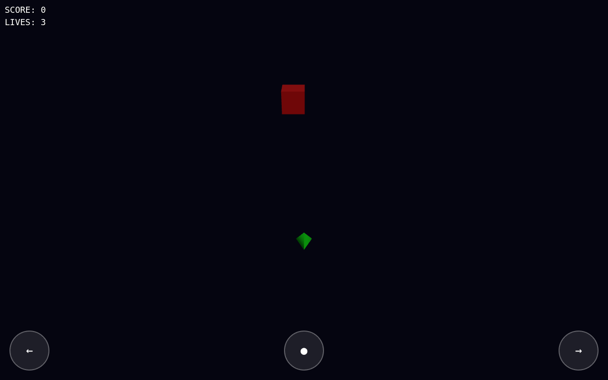
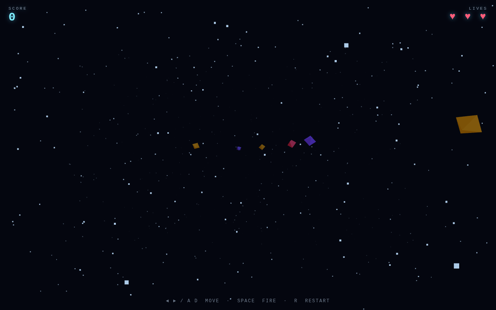
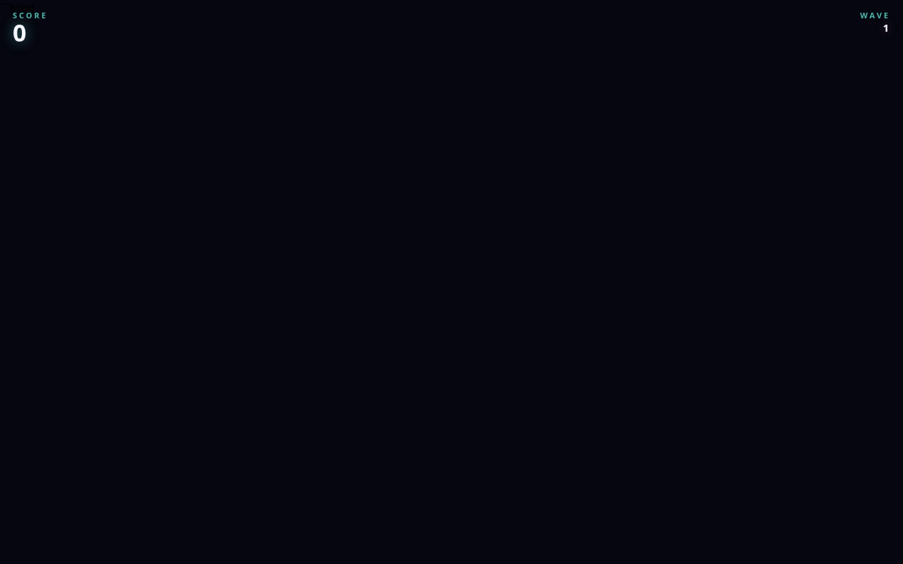
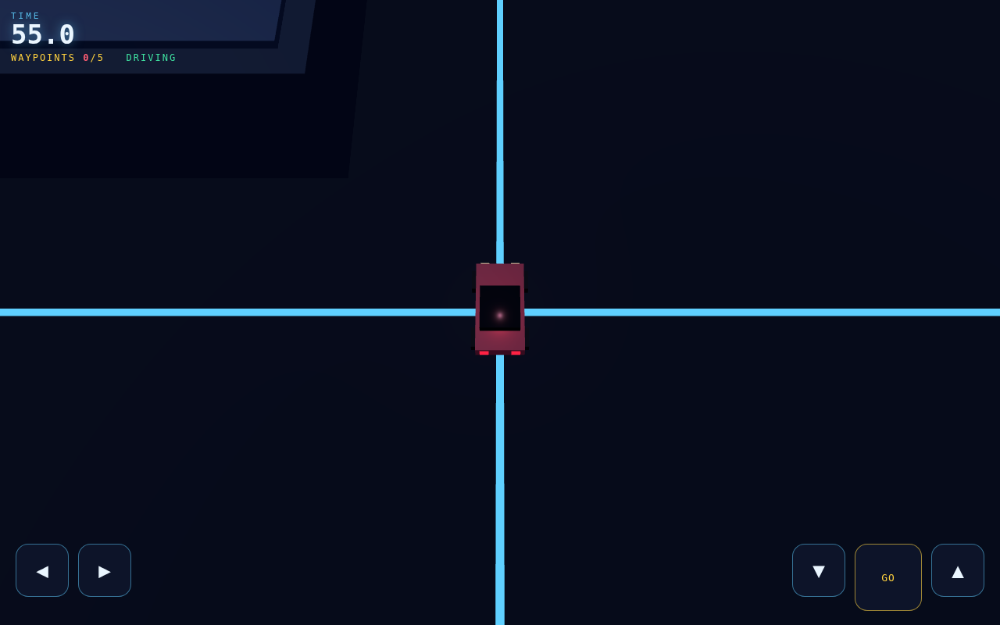
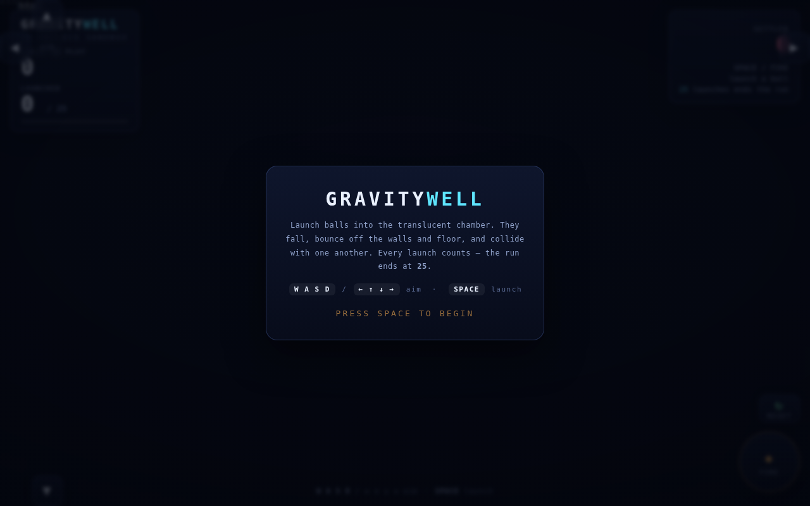

Raw, repeatable benchmark numbers for local models served by llama.cpp (Vulkan) on an AMD Radeon AI PRO R9700 32 GiB box.
Each model writes a single-file three.js game from a frozen prompt. The model draws everything with geometry — no images, textures or audio files. Repeats = extra generation turns allowed to fix a failing build (max 10).
New: four games, side by side → each model's ball sandbox, tower stacker, tower defence and match-3 next to the others, with executed rule checks and a spec-compliance score per attempt.
| Model | Game | Thinking | Attempts | Repeats | Tokens | Build s | Status | What's wrong / notes | Robot | Screenshot | Play |
|---|---|---|---|---|---|---|---|---|---|---|---|
| Qwen3.6-35B-A3B | space shooter (v1 prompt) | off | 1 | 2324 | 22.0 | renders | no window.__game contract → robot cannot score it; animation not advancing | — |  | play | |
| Qwen3.6-35B-A3B | arcade shooter (TUI-derived) | off | 1 | 4132 | 38.2 | renders | playable in browser | — |  | play | |
| Qwen3.6-35B-A3B | top-down driving (TUI-derived) | off | 2 | 1 | 9564 | 90.1 | renders | animation not advancing | — |  | play |
| Qwen3.6-35B-A3B | 3D physics sandbox (TUI-derived) | off | 3 | 2 | 11154 | 105.5 | renders | animation not advancing; 706 console errors | — |  | play |
| Qwen3.8-27B | space shooter (v1 prompt) | off | 1 | 3508 | 79.5 | renders | no window.__game contract → robot cannot score it | 0 |  | play | |
| Qwen3.8-27B | arcade shooter (TUI-derived) | off | 2 | 1 | renders | playable in browser | — |  | play | ||
| Qwen3.8-27B | top-down driving (TUI-derived) | off | 1 | renders | playable in browser | — |  | play | |||
| Qwen3.8-27B | 3D physics sandbox (TUI-derived) | off | 2 | 1 | renders | playable in browser | — |  | play | ||
| Qwen3.8-27B | solar system mission | off | 1 | unverified | — | — | — | play |
no window.__game contract → robot cannot score it; animation not advancing
<!--
WEBGAME_PROMPT — FROZEN (llmbench browser-game cell v1, game cell "webgame-3js")
Sent verbatim as the single user message to every model. Never edit; the sha256 of
this exact file is recorded per run as gen.json:prompt_sha256. If the prompt must
change, that is a new benchmark version (v2) and old results are not comparable.
Graded automatically by games/webvalidate.py (headless Chrome + playwright):
file:// load, http:// load, console errors, WebGL/canvas context, requestAnimationFrame
advancing (two screenshots ~1s apart), and keyboard input visibly moving the player.
So every rule below must hold at RUN TIME, not merely be mentioned in the source.
The model's reply is the deliverable, not a tutorial. No commentary, no build step.
-->
Write a complete, playable arcade space shooter as a SINGLE self-contained HTML file
using three.js. Reply with the full file inside one ```html fenced block and nothing else.
Hard requirements (an automated browser grader checks all of them):
1. ONE FILE, NO BUILD STEP. `index.html` must run correctly when opened directly from
disk via `file://`, with no local server, no bundler, no npm.
- Load three.js from a pinned CDN via an ES-module import map, exactly like this:
<script type="importmap">
{"imports": {"three": "https://unpkg.com/three@0.160.0/build/three.module.js"}}
</script>
<script type="module"> import * as THREE from 'three'; ... </script>
- The 3D scene MUST be rendered with THREE.WebGLRenderer on a <canvas>. A plain 2D
<canvas> game is a failure. THREE must appear in the running code.
2. CANVAS FILLS THE WINDOW. The renderer canvas covers the full viewport, resizes with
the window (handle `resize`), and the camera aspect is updated on resize.
3. SCENE. A perspective camera looking at a playfield of deep space. Include a visible
starfield: at least several hundred star objects (THREE.Points is fine) distributed in
depth that scroll past the camera so the scene looks alive. Use geometry + materials
only — NO external images, textures, audio files or fonts. Colours via material
`color` / `emissive` are fine. Lights are fine.
4. PLAYER. The player is a visible mesh (cone/box/octahedron cluster — your call) near the
bottom of the view, moved on the X axis by the LEFT/RIGHT arrow keys AND A/D.
Clamp its position so it stays on screen. Movement must be smooth (dt-scaled) and
clearly visible to a grader that presses a key and compares screenshots.
5. SHOOTING. SPACE fires a projectile (small glowing mesh, e.g. a stretched box or
sphere) that travels upward (away from camera). Add a short cooldown (~150-250 ms).
Remove projectiles that leave the play area.
6. ENEMIES. Enemies spawn on a timer at random X positions near the far end of the
playfield, below/around the starfield, and fly toward the player (descend toward the
camera / bottom of the screen) at random speeds. They must be visible meshes with
distinct colours. Cap the number alive so it never grows without bound.
7. COLLISION. Use simple distance (or bounding-sphere) checks in world space:
- player projectile vs enemy -> enemy destroyed (explosion effect or fade is a plus),
score increases.
- enemy vs player -> player loses a life; the enemy is removed.
Give the player 3 lives.
8. HUD overlay in plain HTML (absolutely positioned <div>s on top of the canvas, or
DOM text): SCORE and LIVES, updated live. When lives reach 0, show "GAME OVER" and
"Press R to restart"; pressing R resets score, lives, enemies and projectiles and
resumes play. The animation loop must never throw (guard against NaN/holes).
9. PERFORMANCE. Use requestAnimationFrame with a THREE.Clock delta. Use shared
geometry/material instances where sensible, and a reasonable object count (hundreds
of objects max). No shadows or post-processing required.
9b. MACHINE-READABLE CONTRACT (mandatory — an automated robot plays the game through
exactly these hooks; a game without them fails the benchmark, even if it looks fine):
a) Expose `window.__game` and refresh it EVERY FRAME, before or after render, so a
reader at any moment sees the current state. Exact shape (extra keys allowed):
window.__game = {
ready: false, // true once the loop has run at least once
score: 0, // int, same number as the HUD
lives: 3, // int, 3 -> 0
over: false, // true when GAME OVER is shown
player: { x: 640, y: 700 }, // canvas pixel coordinates (see below)
enemies: [{ x: 300, y: 120 }],
bullets: [{ x: 640, y: 600 }],
reset: function () { ... } // same as pressing R
};
All x/y values are CSS pixel coordinates on the canvas: x from 0 (left) to
canvas.clientWidth, y from 0 (top) to canvas.clientHeight. Enemies and bullets
must be included while they are alive and removed when destroyed or out of play.
Keep it as a plain data snapshot plus the `reset` function; do not put THREE
objects in it. It must be cheap enough to rebuild every frame.
b) Listen for input on `window` (`window.addEventListener('keydown', ...)`, not on a
DOM element and not with `tabindex`/focus requirements), and read `event.key`.
The robot drives the game with synthetic events:
window.dispatchEvent(new KeyboardEvent('keydown', { key: 'ArrowLeft' }));
window.dispatchEvent(new KeyboardEvent('keyup', { key: 'ArrowLeft' }));
The same must work for 'ArrowRight', 'ArrowUp', 'ArrowDown', ' ', 'a', 'd', 'r' and
'R'. Do not require `event.code`, do not call preventDefault in a way that breaks
synthetic events, and do not gate gameplay on pointer/click state.
c) `window.__game.reset()` must fully restart the game (score 0, lives 3, enemies and
bullets cleared, `over` false) exactly like pressing R.
d) The game must stay fully playable by a human with the keyboard, unchanged — the
contract adds a read-only state object and nothing the player sees.
10. SIZE. Keep the file under about 350 lines. Correctness and completeness matter far
more than extra features: a smaller game that runs perfectly beats a big one that
throws.
Output: one ```html block containing a complete <!DOCTYPE html> document, then stop.| Turn | Result | Issue | Tokens | s |
|---|---|---|---|---|
| 1 | failed | window.__game contract missing | 2324 | 22.0 |
playable in browser
IMPORTANT: keep the whole file under about 350 lines. A truncated file is a failed submission.
Write a complete, playable browser game as a SINGLE self-contained HTML file using three.js.
Reply with the full file inside one ```html fenced block and nothing else.
Hard requirements (an automated browser grader checks them):
1. ONE FILE, NO BUILD STEP, runs from file:// — load three.js from a pinned CDN import map:
<script type="importmap">{"imports":{"three":"https://unpkg.com/three@0.160.0/build/three.module.js"}}</script>
<script type="module">import * as THREE from 'three'; ...</script>
2. You must DRAW everything yourself with three.js geometry, materials, lights and particles.
NO external images, textures, models, fonts or audio files. No base64 art. Code-drawn only.
3. You must expose a machine-readable state, updated every frame:
window.__game = { ready:true, score:0, lives:3, over:false, player:{x,y}, enemies:[{x,y}], bullets:[{x,y}] };
window.__game.reset = function(){...};
4. Input: listen on window for keydown/keyup (Arrows/WASD + Space). Also support touch:
on-screen buttons using pointerdown/pointerup with touch-action:none, usable at 390x844.
5. Visual quality bar (this is graded by a human): deliberate 4-5 colour palette, gradient or
nebula background instead of flat black, additive particle bursts on hits, hit-flash and
screen shake, eased movement (no linear jumps), readable typographic HUD.
6. Keep it under ~450 lines. No commentary outside the code block.
GAME BRIEF:
ARCADE SPACE SHOOTER. Player ship at the bottom, enemy waves descend from the top,
player shoots upward, enemies that reach the bottom cost a life. Score per kill, waves get faster.
Player must be visible on screen and shots must be able to hit enemies (shared plane).| Turn | Result | Issue | Tokens | s |
|---|---|---|---|---|
| 1 | ok | renders | 4132 | 38.2 |
animation not advancing
Write a complete, playable browser game as a SINGLE self-contained HTML file using three.js.
Reply with the full file inside one ```html fenced block and nothing else.
Hard requirements (an automated browser grader checks them):
1. ONE FILE, NO BUILD STEP, runs from file:// — load three.js from a pinned CDN import map:
<script type="importmap">{"imports":{"three":"https://unpkg.com/three@0.160.0/build/three.module.js"}}</script>
<script type="module">import * as THREE from 'three'; ...</script>
2. You must DRAW everything yourself with three.js geometry, materials, lights and particles.
NO external images, textures, models, fonts or audio files. No base64 art. Code-drawn only.
3. You must expose a machine-readable state, updated every frame:
window.__game = { ready:true, score:0, lives:3, over:false, player:{x,y}, enemies:[{x,y}], bullets:[{x,y}] };
window.__game.reset = function(){...};
4. Input: listen on window for keydown/keyup (Arrows/WASD + Space). Also support touch:
on-screen buttons using pointerdown/pointerup with touch-action:none, usable at 390x844.
5. Visual quality bar (this is graded by a human): deliberate 4-5 colour palette, gradient or
nebula background instead of flat black, additive particle bursts on hits, hit-flash and
screen shake, eased movement (no linear jumps), readable typographic HUD.
6. Keep it under ~450 lines. No commentary outside the code block.
GAME BRIEF:
TOP-DOWN DRIVING MISSION. A car the player steers (left/right turn, up/down accelerate/brake)
on a simple city grid with roads, buildings as obstacles, and 5 pickup waypoints shown on the map.
Reaching a waypoint scores. Colliding with a building costs time; a 60 second timer. Camera follows the car
from above. Draw roads, buildings, car and waypoints with geometry only.| Turn | Result | Issue | Tokens | s |
|---|---|---|---|---|
| 1 | failed | — | 4782 | 44.1 |
| 2 | failed | — | 4782 | 45.9 |
animation not advancing; 706 console errors
IMPORTANT: keep the whole file under 250 lines. No large <style> block — at most 30 lines of CSS, inline styles elsewhere. A truncated file is a failed submission.
Write a complete, playable browser game as a SINGLE self-contained HTML file using three.js.
Reply with the full file inside one ```html fenced block and nothing else.
Hard requirements (an automated browser grader checks them):
1. ONE FILE, NO BUILD STEP, runs from file:// — load three.js from a pinned CDN import map:
<script type="importmap">{"imports":{"three":"https://unpkg.com/three@0.160.0/build/three.module.js"}}</script>
<script type="module">import * as THREE from 'three'; ...</script>
2. You must DRAW everything yourself with three.js geometry, materials, lights and particles.
NO external images, textures, models, fonts or audio files. No base64 art. Code-drawn only.
3. You must expose a machine-readable state, updated every frame:
window.__game = { ready:true, score:0, lives:3, over:false, player:{x,y}, enemies:[{x,y}], bullets:[{x,y}] };
window.__game.reset = function(){...};
4. Input: listen on window for keydown/keyup (Arrows/WASD + Space). Also support touch:
on-screen buttons using pointerdown/pointerup with touch-action:none, usable at 390x844.
5. Visual quality bar (this is graded by a human): deliberate 4-5 colour palette, gradient or
nebula background instead of flat black, additive particle bursts on hits, hit-flash and
screen shake, eased movement (no linear jumps), readable typographic HUD.
6. Keep it under ~450 lines. No commentary outside the code block.
GAME BRIEF:
3D PHYSICS SANDBOX. A translucent box. Balls spawn and fall under gravity, bounce off the
floor and walls with restitution, and collide with each other (simple sphere-sphere). The player launches a ball
with Space from a random position; a HUD shows ball count. Score = number of simultaneous balls still bouncing after
they settle is a failure; the game ends when 25 balls have been launched. Determinism matters: same seed/timing must
bounce the same way.| Turn | Result | Issue | Tokens | s |
|---|---|---|---|---|
| 1 | failed | — | 3812 | 35.1 |
| 2 | failed | — | 3671 | 35.2 |
| 3 | failed | — | 3671 | 35.2 |
no window.__game contract → robot cannot score it
<!--
WEBGAME_PROMPT — FROZEN (llmbench browser-game cell v1, game cell "webgame-3js")
Sent verbatim as the single user message to every model. Never edit; the sha256 of
this exact file is recorded per run as gen.json:prompt_sha256. If the prompt must
change, that is a new benchmark version (v2) and old results are not comparable.
Graded automatically by games/webvalidate.py (headless Chrome + playwright):
file:// load, http:// load, console errors, WebGL/canvas context, requestAnimationFrame
advancing (two screenshots ~1s apart), and keyboard input visibly moving the player.
So every rule below must hold at RUN TIME, not merely be mentioned in the source.
The model's reply is the deliverable, not a tutorial. No commentary, no build step.
-->
Write a complete, playable arcade space shooter as a SINGLE self-contained HTML file
using three.js. Reply with the full file inside one ```html fenced block and nothing else.
Hard requirements (an automated browser grader checks all of them):
1. ONE FILE, NO BUILD STEP. `index.html` must run correctly when opened directly from
disk via `file://`, with no local server, no bundler, no npm.
- Load three.js from a pinned CDN via an ES-module import map, exactly like this:
<script type="importmap">
{"imports": {"three": "https://unpkg.com/three@0.160.0/build/three.module.js"}}
</script>
<script type="module"> import * as THREE from 'three'; ... </script>
- The 3D scene MUST be rendered with THREE.WebGLRenderer on a <canvas>. A plain 2D
<canvas> game is a failure. THREE must appear in the running code.
2. CANVAS FILLS THE WINDOW. The renderer canvas covers the full viewport, resizes with
the window (handle `resize`), and the camera aspect is updated on resize.
3. SCENE. A perspective camera looking at a playfield of deep space. Include a visible
starfield: at least several hundred star objects (THREE.Points is fine) distributed in
depth that scroll past the camera so the scene looks alive. Use geometry + materials
only — NO external images, textures, audio files or fonts. Colours via material
`color` / `emissive` are fine. Lights are fine.
4. PLAYER. The player is a visible mesh (cone/box/octahedron cluster — your call) near the
bottom of the view, moved on the X axis by the LEFT/RIGHT arrow keys AND A/D.
Clamp its position so it stays on screen. Movement must be smooth (dt-scaled) and
clearly visible to a grader that presses a key and compares screenshots.
5. SHOOTING. SPACE fires a projectile (small glowing mesh, e.g. a stretched box or
sphere) that travels upward (away from camera). Add a short cooldown (~150-250 ms).
Remove projectiles that leave the play area.
6. ENEMIES. Enemies spawn on a timer at random X positions near the far end of the
playfield, below/around the starfield, and fly toward the player (descend toward the
camera / bottom of the screen) at random speeds. They must be visible meshes with
distinct colours. Cap the number alive so it never grows without bound.
7. COLLISION. Use simple distance (or bounding-sphere) checks in world space:
- player projectile vs enemy -> enemy destroyed (explosion effect or fade is a plus),
score increases.
- enemy vs player -> player loses a life; the enemy is removed.
Give the player 3 lives.
8. HUD overlay in plain HTML (absolutely positioned <div>s on top of the canvas, or
DOM text): SCORE and LIVES, updated live. When lives reach 0, show "GAME OVER" and
"Press R to restart"; pressing R resets score, lives, enemies and projectiles and
resumes play. The animation loop must never throw (guard against NaN/holes).
9. PERFORMANCE. Use requestAnimationFrame with a THREE.Clock delta. Use shared
geometry/material instances where sensible, and a reasonable object count (hundreds
of objects max). No shadows or post-processing required.
9b. MACHINE-READABLE CONTRACT (mandatory — an automated robot plays the game through
exactly these hooks; a game without them fails the benchmark, even if it looks fine):
a) Expose `window.__game` and refresh it EVERY FRAME, before or after render, so a
reader at any moment sees the current state. Exact shape (extra keys allowed):
window.__game = {
ready: false, // true once the loop has run at least once
score: 0, // int, same number as the HUD
lives: 3, // int, 3 -> 0
over: false, // true when GAME OVER is shown
player: { x: 640, y: 700 }, // canvas pixel coordinates (see below)
enemies: [{ x: 300, y: 120 }],
bullets: [{ x: 640, y: 600 }],
reset: function () { ... } // same as pressing R
};
All x/y values are CSS pixel coordinates on the canvas: x from 0 (left) to
canvas.clientWidth, y from 0 (top) to canvas.clientHeight. Enemies and bullets
must be included while they are alive and removed when destroyed or out of play.
Keep it as a plain data snapshot plus the `reset` function; do not put THREE
objects in it. It must be cheap enough to rebuild every frame.
b) Listen for input on `window` (`window.addEventListener('keydown', ...)`, not on a
DOM element and not with `tabindex`/focus requirements), and read `event.key`.
The robot drives the game with synthetic events:
window.dispatchEvent(new KeyboardEvent('keydown', { key: 'ArrowLeft' }));
window.dispatchEvent(new KeyboardEvent('keyup', { key: 'ArrowLeft' }));
The same must work for 'ArrowRight', 'ArrowUp', 'ArrowDown', ' ', 'a', 'd', 'r' and
'R'. Do not require `event.code`, do not call preventDefault in a way that breaks
synthetic events, and do not gate gameplay on pointer/click state.
c) `window.__game.reset()` must fully restart the game (score 0, lives 3, enemies and
bullets cleared, `over` false) exactly like pressing R.
d) The game must stay fully playable by a human with the keyboard, unchanged — the
contract adds a read-only state object and nothing the player sees.
10. SIZE. Keep the file under about 350 lines. Correctness and completeness matter far
more than extra features: a smaller game that runs perfectly beats a big one that
throws.
Output: one ```html block containing a complete <!DOCTYPE html> document, then stop.| Turn | Result | Issue | Tokens | s |
|---|---|---|---|---|
| 1 | failed | — | 3508 | 66.3 |
playable in browser
You wrote this single-file three.js browser game. It FAILS in a real browser.
Observed failure:
pageerror: offset is out of bounds
Requirements it must satisfy: one self-contained HTML file, three.js from the pinned CDN import map, everything drawn with geometry (no external assets), a working window.__game = {ready:true, score, lives, over, player:{x,y}, enemies:[{x,y}], bullets:[{x,y}]} updated every frame plus window.__game.reset(), keyboard and touch controls, and it must run without console errors. Keep it under 350 lines.
Fix the actual defect and reply with the complete corrected file in one ```html block.
Current code:
```html
<!DOCTYPE html>
<html lang="en">
<head>
<meta charset="UTF-8">
<meta name="viewport" content="width=device-width, initial-scale=1, maximum-scale=1, user-scalable=no">
<title>NEBULA STRIKE</title>
<style>
html,body{margin:0;height:100%;overflow:hidden;background:#05060f;
font-family:'Segoe UI',system-ui,-apple-system,sans-serif;
-webkit-user-select:none;user-select:none;touch-action:none;}
#c{position:fixed;inset:0;display:block;}
#hud{position:fixed;top:0;left:0;right:0;padding:14px 18px;pointer-events:none;
display:flex;justify-content:space-between;align-items:flex-start;z-index:5;}
.lbl{font-size:11px;letter-spacing:3px;color:#5fd6ff;opacity:.75;font-weight:600;}
#score{font-size:34px;font-weight:800;color:#eafcff;line-height:1;
text-shadow:0 0 14px rgba(95,214,255,.6);}
#wave{font-size:15px;font-weight:700;color:#ffcf5c;letter-spacing:2px;
text-shadow:0 0 10px rgba(255,160,60,.5);}
#lives{display:flex;gap:6px;margin-top:6px;}
.life{width:16px;height:16px;background:#ff5c7a;transform:rotate(45deg);
box-shadow:0 0 10px rgba(255,92,122,.8);border-radius:2px;}
.life.off{background:transparent;box-shadow:none;border:1px solid rgba(255,92,122,.4);}
#msg{position:fixed;top:38%;left:0;right:0;text-align:center;pointer-events:none;
z-index:6;font-weight:800;font-size:44px;letter-spacing:6px;color:#eafcff;
text-shadow:0 0 24px rgba(95,214,255,.8);opacity:0;transition:opacity .3s;}
#msg small{display:block;font-size:16px;letter-spacing:4px;color:#ffcf5c;margin-top:10px;font-weight:600;}
#touch{position:fixed;bottom:0;left:0;right:0;padding:16px;z-index:7;
display:flex;justify-content:space-between;align-items:flex-end;pointer-events:none;}
.pad{display:flex;gap:12px;pointer-events:auto;}
.btn{width:64px;height:64px;border-radius:16px;border:1px solid rgba(95,214,255,.4);
background:rgba(20,40,70,.35);color:#bfe9ff;font-size:26px;font-weight:800;
display:flex;align-items:center;justify-content:center;touch-action:none;
backdrop-filter:blur(2px);box-shadow:0 0 12px rgba(95,214,255,.15) inset;}
.btn:active{background:rgba(95,214,255,.35);color:#fff;}
#fire{width:84px;height:84px;border-radius:50%;font-size:15px;letter-spacing:1px;
border-color:rgba(255,92,122,.5);color:#ffd0da;box-shadow:0 0 16px rgba(255,92,122,.25) inset;}
#fire:active{background:rgba(255,92,122,.4);}
@media (min-width:700px){#touch{display:none;}}
</style>
</head>
<body>
<canvas id="c"></canvas>
<div id="hud">
<div><div class="lbl">SCORE</div><div id="score">0</div></div>
<div style="text-align:right"><div class="lbl">WAVE</div><div id="wave">1</div>
<div id="lives"></div></div>
</div>
<div id="msg"></div>
<div id="touch">
<div class="pad">
<div class="btn" data-k="left">◀</div>
<div class="btn" data-k="right">▶</div>
</div>
<div class="pad"><div class="btn" id="fire" data-k="fire">FIRE</div></div>
</div>
<script type="importmap">{"imports":{"three":"https://unpkg.com/three@0.160.0/build/three.module.js"}}</script>
<script type="module">
import * as THREE from 'three';
const W=16, H=20, SHIP_Y=-8.5, BULLET_SPEED=34, ENEMY_SPEED=3.2;
const PAL={cyan:0x5fd6ff, gold:0xffcf5c, magenta:0xff5c7a, green:0x7dffb0, white:0xeafcff};
let renderer, scene, camera, clock, bg, nebula, stars, starData, ship, shipGlow, engine, engineGlow;
let bullets=[], enemies=[], particles=[], pPool=[];
let score=0, lives=3, wave=1, over=false, ready=false, shake=0, flash=0, invuln=0;
let spawnTimer=0, spawnInterval=1.1, fireCd=0, msgTimer=0, msgShown='';
const keys={left:false,right:false,fire:false};
const player={x:0,y:SHIP_Y};
const $=id=>document.getElementById(id);
const scoreEl=$('score'), waveEl=$('wave'), livesEl=$('lives'), msgEl=$('msg');
function init(){
renderer=new THREE.WebGLRenderer({canvas:$('c'),antialias:true});
renderer.setPixelRatio(Math.min(devicePixelRatio,2));
renderer.setSize(innerWidth,innerHeight);
scene=new THREE.Scene();
camera=new THREE.OrthographicCamera(-W/2,W/2,H/2,-H/2,0.1,100);
camera.position.z=10;
clock=new THREE.Clock();
buildBackground();
buildShip();
buildPool();
window.__game={ready:true,score:0,lives:3,over:false,player:{x:0,y:SHIP_Y},enemies:[],bullets:[],reset:reset};
ready=true;
showMsg('NEBULA STRIKE','TAP FIRE / SPACE TO SHOOT');
addEventListener('resize',onResize);
onResize();
animate();
}
function buildBackground(){
const g=new THREE.BufferGeometry();
const pos=new Float32Array(6), col=new Float32Array(6);
const c1=new THREE.Color(0x0a0e24), c2=new THREE.Color(0x1a0f2e), c3=new THREE.Color(0x04121f);
g.setAttribute('position',new THREE.BufferAttribute(pos,3));
g.setAttribute('color',new THREE.BufferAttribute(col,3));
pos.set([-1,-1,0, 1,-1,0, 1,1,0, -1,-1,0, 1,1,0, -1,1,0]);
col.set([c1.r,c1.g,c1.b, c2.r,c2.g,c2.b, c3.r,c3.g,c3.b, c1.r,c1.g,c1.b, c2.r,c2.g,c2.b, c3.r,c3.g,c3.b]);
bg=new THREE.Mesh(g,new THREE.ShaderMaterial({
vertexShader:`varying vec2 v;void main(){v=position.xy;gl_Position=vec4(position.xy,0.,1.);}`,
fragmentShader:`varying vec2 v;
void main(){
vec3 a=vec3(.04,.05,.14),b=vec3(.10,.06,.18),c=vec3(.02,.07,.12);
float t=(v.y+1.)*.5;
vec3 col=mix(a,b,smoothstep(0.,.6,t));
col=mix(col,c,smoothstep(.5,1.,t));
float d=length(v*vec2(.7,1.));
col+=vec3(.05,.03,.08)*smoothstep(1.2,.0,d);
gl_FragColor=vec4(col,1.);
}`,depthTest:false,depthWrite:false}));
bg.renderOrder=-10; bg.frustumCulled=false; scene.add(bg);
// nebula blobs
const nb=new THREE.Group();
const blob=(x,y,r,c,o)=>{const m=new THREE.Mesh(new THREE.CircleGeometry(r,32),
new THREE.MeshBasicMaterial({color:c,transparent:true,opacity:o,blending:THREE.AdditiveBlending,depthWrite:false}));
m.position.set(x,y,-9);m.renderOrder=-9;nb.add(m);};
blob(-4,3,7,PAL.cyan,.10); blob(5,-2,8,PAL.magenta,.09); blob(0,7,6,PAL.gold,.06);
blob(3,4,5,PAL.green,.05); blob(-5,-4,6,PAL.cyan,.07);
scene.add(nb); nebula=nb;
// stars
const N=140, sp=new Float32Array(N*3), sc=new Float32Array(N*3);
starData=[];
for(let i=0;i<N;i++){
const x=(Math.random()*2-1)*W/2, y=(Math.random()*2-1)*H/2, z=-8+Math.random()*2;
sp[i*3]=x;sp[i*3+1]=y;sp[i*3+2]=z;
const b=.4+Math.random()*.6;
sc[i*3]=b;sc[i*3+1]=b;sc[i*3+2]=b*(.8+Math.random()*.4);
starData.push({x,y,sp:1+Math.random()*3});
}
const sg=new THREE.BufferGeometry();
sg.setAttribute('position',new THREE.BufferAttribute(sp,3));
sg.setAttribute('color',new THREE.BufferAttribute(sc,3));
stars=new THREE.Points(sg,new THREE.PointsMaterial({size:.14,vertexColors:true,
transparent:true,opacity:.9,blending:THREE.AdditiveBlending,depthWrite:false}));
stars.renderOrder=-8; scene.add(stars);
}
function buildShip(){
ship=new THREE.Group();
const body=new THREE.Mesh(new THREE.ConeGeometry(.55,1.5,4),
new THREE.MeshStandardMaterial({color:PAL.cyan,emissive:PAL.cyan,emissiveIntensity:.5,metalness:.4,roughness:.3}));
body.rotation.x=Math.PI/2; body.rotation.z=Math.PI/4; body.position.y=.1;
const wing=new THREE.Mesh(new THREE.BoxGeometry(1.7,.12,.5),
new THREE.MeshStandardMaterial({color:0x2a6f9c,emissive:0x1a4a6a,emissiveIntensity:.4,metalness:.5,roughness:.4}));
wing.position.y=-.2;
const tipL=new THREE.Mesh(new THREE.BoxGeometry(.2,.12,.5),
new THREE.MeshStandardMaterial({color:PAL.magenta,emissive:PAL.magenta,emissiveIntensity:.8}));
tipL.position.set(-.85,-.2,0);
const tipR=tipL.clone(); tipR.position.x=.85;
const cockpit=new THREE.Mesh(new THREE.SphereGeometry(.22,12,12),
new THREE.MeshStandardMaterial({color:PAL.white,emissive:PAL.cyan,emissiveIntensity:.6}));
cockpit.position.set(0,.15,.25);
ship.add(body,wing,tipL,tipR,cockpit);
shipGlow=new THREE.Mesh(new THREE.CircleGeometry(1.1,24),
new THREE.MeshBasicMaterial({color:PAL.cyan,transparent:true,opacity:.18,blending:THREE.AdditiveBlending,depthWrite:false}));
shipGlow.position.z=-.1; ship.add(shipGlow);
engine=new THREE.Mesh(new THREE.ConeGeometry(.3,.7,8),
new THREE.MeshBasicMaterial({color:PAL.gold,transparent:true,opacity:.9,blending:THREE.AdditiveBlending,depthWrite:false}));
engine.rotation.x=-Math.PI/2; engine.position.y=-.7; ship.add(engine);
engineGlow=new THREE.Mesh(new THREE.CircleGeometry(.5,16),
new THREE.MeshBasicMaterial({color:PAL.gold,transparent:true,opacity:.5,blending:THREE.AdditiveBlending,depthWrite:false}));
engineGlow.position.y=-.7; ship.add(engineGlow);
ship.position.set(0,SHIP_Y,0);
scene.add(ship);
}
function buildPool(){
const geo=new THREE.PlaneGeometry(.28,.28);
for(let i=0;i<160;i++){
const m=new THREE.Mesh(geo,new THREE.MeshBasicMaterial({color:PAL.white,transparent:true,
opacity:0,blending:THREE.AdditiveBlending,depthWrite:false}));
m.visible=false; scene.add(m);
pPool.push({m,vx:0,vy:0,life:0,max:1,size:1});
}
}
function spawnParticle(x,y,color,spd,life,size){
const p=pPool.find(p=>!p.m.visible); if(!p)return;
const a=Math.random()*Math.PI*2, s=spd*(.4+Math.random()*.8);
p.m.visible=true; p.m.position.set(x,y,0);
p.m.material.color.setHex(color); p.m.material.opacity=1;
p.m.scale.set(size,size,1);
p.vx=Math.cos(a)*s; p.vy=Math.sin(a)*s; p.life=life; p.max=life; p.size=size;
particles.push(p);
}
function burst(x,y,color,n,spd,life,size){for(let i=0;i<n;i++)spawnParticle(x,y,color,spd,life,size);}
function fire(){
if(fireCd>0||over)return; fireCd=.16;
const b=new THREE.Mesh(new THREE.PlaneGeometry(.22,.7),
new THREE.MeshBasicMaterial({color:PAL.cyan,transparent:true,opacity:1,blending:THREE.AdditiveBlending,depthWrite:false}));
b.position.set(player.x,SHIP_Y+.9,0); scene.add(b);
bullets.push({m:b,x:player.x,y:SHIP_Y+.9});
burst(player.x,SHIP_Y+.9,PAL.cyan,3,4,.25,.5);
}
function spawnEnemy(){
const x=(Math.random()*2-1)*(W/2-1.2);
const g=new THREE.Group();
const body=new THREE.Mesh(new THREE.ConeGeometry(.6,1.1,4),
new THREE.MeshStandardMaterial({color:PAL.magenta,emissive:PAL.magenta,emissiveIntensity:.5,metalness:.4,roughness:.4}));
body.rotation.x=-Math.PI/2; body.rotation.z=Math.PI/4;
const core=new THREE.Mesh(new THREE.SphereGeometry(.28,10,10),
new THREE.MeshBasicMaterial({color:PAL.gold,transparent:true,opacity:.9,blending:THREE.AdditiveBlending,depthWrite:false}));
g.add(body,core);
g.position.set(x,H/2+.8,0); scene.add(g);
enemies.push({m:g,x,y:H/2+.8,vy:ENEMY_SPEED*(1+wave*.08),phase:Math.random()*6,core});
}
function killEnemy(e){
scene.remove(e.m);
const i=enemies.indexOf(e); if(i>=0)enemies.splice(i,1);
score+=100;
burst(e.x,e.y,PAL.magenta,14,7,.6,.7);
burst(e.x,e.y,PAL.gold,8,5,.5,.5);
shake=Math.min(shake+.5,1.4);
}
function hitPlayer(){
if(invuln>0||over)return;
lives--; invuln=1.6; flash=1; shake=1.6;
burst(player.x,SHIP_Y,PAL.magenta,20,8,.7,.8);
burst(player.x,SHIP_Y,PAL.white,10,6,.5,.6);
if(lives<=0)gameOver();
}
function gameOver(){
over=true;
burst(player.x,SHIP_Y,PAL.cyan,30,10,.9,1);
burst(player.x,SHIP_Y,PAL.magenta,20,8,.8,.8);
ship.visible=false;
showMsg('GAME OVER','PRESS R / TAP TO RESTART');
}
function reset(){
bullets.forEach(b=>scene.remove(b.m)); bullets=[];
enemies.forEach(e=>scene.remove(e.m)); enemies=[];
particles.forEach(p=>{p.m.visible=false;}); particles=[];
score=0; lives=3; wave=1; over=false; invuln=1; shake=0; flash=0;
spawnTimer=0; spawnInterval=1.1; fireCd=0;
player.x=0; ship.visible=true; ship.position.set(0,SHIP_Y,0);
showMsg('NEBULA STRIKE','WAVE 1');
}
function showMsg(t,s){
msgEl.innerHTML=t+(s?`<small>${s}</small>`:'');
msgEl.style.opacity=1; msgTimer=2.2; msgShown=t;
}
function onResize(){
const a=innerWidth/innerHeight;
if(a>W/H){camera.left=-H/2*a;camera.right=H/2*a;camera.top=H/2;camera.bottom=-H/2;}
else{camera.top=H/2;camera.bottom=-H/2;camera.left=-W/2;camera.right=W/2;}
camera.updateProjectionMatrix();
renderer.setSize(innerWidth,innerHeight);
}
function update(dt){
// stars drift
const sp=stars.geometry.attributes.position.array;
for(let i=0;i<starData.length;i++){
starData[i].y-=starData[i].sp*dt;
if(starData[i].y<-H/2){starData[i].y=H/2;starData[i].x=(Math.random()*2-1)*W/2;}
sp[i*3]=starData[i].x; sp[i*3+1]=starData[i].y;
}
stars.geometry.attributes.position.needsUpdate=true;
nebula.rotation.z+=dt*.02;
if(!over){
// player move (eased)
const dir=(keys.right?1:0)-(keys.left?1:0);
const target=THREE.MathUtils.clamp(player.x+dir*14*dt,-W/2+1,W/2-1);
player.x+=(target-player.x)*Math.min(1,dt*12);
ship.position.x=player.x;
ship.rotation.z=THREE.MathUtils.lerp(ship.rotation.z,-dir*.35,Math.min(1,dt*10));
ship.position.y=SHIP_Y+Math.sin(clock.elapsedTime*3)*.08;
if(keys.fire)fire();
fireCd-=dt; invuln-=dt;
// spawn
spawnTimer-=dt;
if(spawnTimer<=0){spawnEnemy();spawnTimer=spawnInterval;}
// bullets
for(let i=bullets.length-1;i>=0;i--){
const b=bullets[i]; b.y+=BULLET_SPEED*dt; b.m.position.y=b.y;
if(b.y>H/2+.5){scene.remove(b.m);bullets.splice(i,1);}
}
// enemies
for(let i=enemies.length-1;i>=0;i--){
const e=enemies[i]; e.y-=e.vy*dt; e.phase+=dt*2;
e.m.position.y=e.y; e.m.position.x=e.x+Math.sin(e.phase)*.4;
e.core.material.opacity=.6+Math.sin(e.phase*3)*.3;
if(e.y<-H/2+.8){scene.remove(e.m);enemies.splice(i,1);hitPlayer();continue;}
// bullet collision
for(let j=bullets.length-1;j>=0;j--){
const b=bullets[j];
if(Math.abs(b.x-e.m.position.x)<.85&&Math.abs(b.y-e.y)<.85){
scene.remove(b.m);bullets.splice(j,1);killEnemy(e);break;
}
}
}
// wave progression
const nw=Math.floor(score/500)+1;
if(nw>wave){wave=nw;spawnInterval=Math.max(.35,1.1-wave*.07);showMsg('WAVE '+wave,'');}
}
// particles
for(let i=particles.length-1;i>=0;i--){
const p=particles[i]; p.life-=dt;
if(p.life<=0){p.m.visible=false;particles.splice(i,1);continue;}
p.m.position.x+=p.vx*dt; p.m.position.y+=p.vy*dt;
p.vx*=.94; p.vy*=.94;
const t=p.life/p.max;
p.m.material.opacity=t; p.m.scale.set(p.size*t,p.size*t,1);
}
// engine flicker
const fl=.7+Math.sin(clock.elapsedTime*30)*.3;
engine.scale.y=.8+fl*.4; engineGlow.material.opacity=.3+fl*.3;
shipGlow.material.opacity=invuln>0?(Math.sin(clock.elapsedTime*20)>0?.3:.05):.18;
// shake + flash
shake=Math.max(0,shake-dt*3); flash=Math.max(0,flash-dt*2.5);
const sx=(Math.random()*2-1)*shake*.4, sy=(Math.random()*2-1)*shake*.4;
camera.position.x=sx; camera.position.y=sy;
bg.material.uniforms; // (no-op)
if(flash>0){
if(!window.__flash){const f=new THREE.Mesh(new THREE.PlaneGeometry(2,2),
new THREE.MeshBasicMaterial({color:PAL.magenta,transparent:true,opacity:0,depthTest:false}));
f.renderOrder=10;f.frustumCulled=false;scene.add(f);window.__flash=f;}
window.__flash.material.opacity=flash*.5;
} else if(window.__flash)window.__flash.material.opacity=0;
// msg fade
if(msgTimer>0){msgTimer-=dt;if(msgTimer<=0)msgEl.style.opacity=0;}
// HUD
scoreEl.textContent=score; waveEl.textContent=wave;
let lh=''; for(let i=0;i<3;i++)lh+=`<div class="life${i<lives?'':' off'}"></div>`;
if(livesEl.innerHTML!==lh)livesEl.innerHTML=lh;
// machine state
const g=window.__game;
g.ready=ready; g.score=score; g.lives=lives; g.over=over;
g.player.x=player.x; g.player.y=SHIP_Y;
g.enemies=enemies.map(e=>({x:e.m.position.x,y:e.y}));
g.bullets=bullets.map(b=>({x:b.x,y:b.y}));
}
function animate(){
requestAnimationFrame(animate);
const dt=Math.min(clock.getDelta(),.05);
update(dt);
renderer.render(scene,camera);
}
// ---- input ----
const keymap={ArrowLeft:'left',KeyA:'left',ArrowRight:'right',KeyD:'right',Space:'fire'};
addEventListener('keydown',e=>{
if(keymap[e.code]){keys[keymap[e.code]]=true;e.preventDefault();}
if(e.code==='KeyR'&&over)reset();
});
addEventListener('keyup',e=>{if(keymap[e.code])keys[keymap[e.code]]=false;});
document.querySelectorAll('.btn').forEach(b=>{
const k=b.dataset.k;
const on=e=>{e.preventDefault();keys[k]=true;};
const off=e=>{e.preventDefault();keys[k]=false;};
b.addEventListener('pointerdown',on);
b.addEventListener('pointerup',off);
b.addEventListener('pointerleave',off);
b.addEventListener('pointercancel',off);
});
addEventListener('pointerdown',e=>{
if(over&&!e.target.closest('.btn'))reset();
});
init();
</script>
</body>
</html>
<script src="../touch.js"></script>
```| Turn | Result | Issue | Tokens | s |
|---|---|---|---|---|
| 1 | failed | pageerror: offset is out of bounds | 6147 | 121.3 |
| 2 | ok | renders |
playable in browser
Write a complete, playable browser game as a SINGLE self-contained HTML file using three.js.
Reply with the full file inside one ```html fenced block and nothing else.
Hard requirements (an automated browser grader checks them):
1. ONE FILE, NO BUILD STEP, runs from file:// — load three.js from a pinned CDN import map:
<script type="importmap">{"imports":{"three":"https://unpkg.com/three@0.160.0/build/three.module.js"}}</script>
<script type="module">import * as THREE from 'three'; ...</script>
2. You must DRAW everything yourself with three.js geometry, materials, lights and particles.
NO external images, textures, models, fonts or audio files. No base64 art. Code-drawn only.
3. You must expose a machine-readable state, updated every frame:
window.__game = { ready:true, score:0, lives:3, over:false, player:{x,y}, enemies:[{x,y}], bullets:[{x,y}] };
window.__game.reset = function(){...};
4. Input: listen on window for keydown/keyup (Arrows/WASD + Space). Also support touch:
on-screen buttons using pointerdown/pointerup with touch-action:none, usable at 390x844.
5. Visual quality bar (this is graded by a human): deliberate 4-5 colour palette, gradient or
nebula background instead of flat black, additive particle bursts on hits, hit-flash and
screen shake, eased movement (no linear jumps), readable typographic HUD.
6. Keep it under ~450 lines. No commentary outside the code block.
GAME BRIEF:
TOP-DOWN DRIVING MISSION. A car the player steers (left/right turn, up/down accelerate/brake)
on a simple city grid with roads, buildings as obstacles, and 5 pickup waypoints shown on the map.
Reaching a waypoint scores. Colliding with a building costs time; a 60 second timer. Camera follows the car
from above. Draw roads, buildings, car and waypoints with geometry only.playable in browser
You wrote this single-file three.js browser game. It FAILS in a real browser.
Observed failure:
pageerror: missing ) after argument list
Requirements it must satisfy: one self-contained HTML file, three.js from the pinned CDN import map, everything drawn with geometry (no external assets), a working window.__game = {ready:true, score, lives, over, player:{x,y}, enemies:[{x,y}], bullets:[{x,y}]} updated every frame plus window.__game.reset(), keyboard and touch controls, and it must run without console errors. Keep it under 350 lines.
Fix the actual defect and reply with the complete corrected file in one ```html block.
Current code:
```html
```html
<!DOCTYPE html>
<html lang="en">
<head>
<meta charset="utf-8">
<meta name="viewport" content="width=device-width,initial-scale=1,maximum-scale=1,user-scalable=no">
<title>GRAVITY WELL — 3D Physics Sandbox</title>
<style>
:root{
--bg0:#05070f; --bg1:#0b1226; --bg2:#141d3a;
--ink:#eaf1ff; --dim:#8ea0c8; --faint:#5a6a92;
--cyan:#5fe6ff; --amber:#ffb454; --coral:#ff6f91; --mint:#7dffb0;
--line:rgba(120,160,255,.22);
}
*{box-sizing:border-box;margin:0;padding:0}
html,body{height:100%;overflow:hidden;background:var(--bg0);color:var(--ink);
font-family:ui-monospace,"SF Mono","Cascadia Code",Menlo,Consolas,monospace;
-webkit-user-select:none;user-select:none;touch-action:none;overscroll-behavior:none}
#c{position:fixed;inset:0;display:block}
.vignette{position:fixed;inset:0;pointer-events:none;z-index:5;
background:radial-gradient(120% 90% at 50% 42%,transparent 40%,rgba(3,5,12,.55) 100%)}
.hud{position:fixed;inset:0;pointer-events:none;z-index:10}
.panel{position:absolute;background:linear-gradient(180deg,rgba(14,22,44,.72),rgba(9,14,30,.55));
border:1px solid var(--line);border-radius:12px;padding:12px 16px;backdrop-filter:blur(6px);
box-shadow:0 8px 30px rgba(0,0,0,.35)}
.tl{top:16px;left:16px;min-width:190px}
.tr{top:16px;right:16px;text-align:right;min-width:150px}
.brand{font-size:19px;font-weight:800;letter-spacing:.14em;line-height:1}
.brand b{color:var(--cyan)}
.sub{font-size:10px;letter-spacing:.34em;color:var(--faint);margin-top:6px}
.stat{margin-top:12px}
.stat .k{font-size:9px;letter-spacing:.28em;color:var(--dim)}
.stat .v{font-size:34px;font-weight:800;line-height:1;margin-top:2px;color:var(--ink)}
.stat .v small{font-size:13px;color:var(--faint);font-weight:600}
.bar{height:6px;border-radius:4px;background:rgba(255,255,255,.08);margin-top:8px;overflow:hidden}
.bar i{display:block;height:100%;width:0;border-radius:4px;
background:linear-gradient(90deg,var(--cyan),var(--mint));transition:width .18s ease}
.legend{margin-top:12px;font-size:10px;letter-spacing:.12em;color:var(--dim);line-height:1.7}
.legend span{color:var(--cyan)}
.controls{position:absolute;left:50%;bottom:18px;transform:translateX(-50%);
display:flex;gap:10px;align-items:center;pointer-events:none;
font-size:10px;letter-spacing:.16em;color:var(--faint)}
.controls b{color:var(--dim);font-weight:700}
.pad{position:absolute;inset:0;pointer-events:none;z-index:12}
.btn{position:absolute;pointer-events:auto;touch-action:none;
display:flex;align-items:center;justify-content:center;flex-direction:column;
border:1px solid var(--line);border-radius:16px;color:var(--ink);
background:linear-gradient(180deg,rgba(20,30,58,.6),rgba(10,16,34,.5));
backdrop-filter:blur(4px);font-family:inherit;letter-spacing:.14em;
box-shadow:0 6px 20px rgba(0,0,0,.35);transition:transform .06s,background .12s,border-color .12s}
.btn .ic{font-size:22px;line-height:1}
.btn .lb{font-size:9px;color:var(--dim);margin-top:3px}
.btn:active,.btn.on{transform:scale(.94);border-color:var(--cyan);
background:linear-gradient(180deg,rgba(40,70,120,.7),rgba(16,26,52,.6))}
.btn.on .ic{color:var(--cyan)}
.dpad{left:16px;bottom:16px;width:150px;height:150px}
.dpad .btn{width:48px;height:48px;border-radius:12px}
.dpad .up{left:51px;top:0}.dpad .down{left:51px;bottom:0}
.dpad .left{left:0;top:51px}.dpad .right{right:0;top:51px}
.dpad .mid{left:51px;top:51px;background:transparent;border:none;box-shadow:none;
color:var(--faint);font-size:9px;letter-spacing:.2em}
.fire{right:16px;bottom:22px;width:96px;height:96px;border-radius:50%;
border-color:rgba(255,180,84,.5)}
.fire .ic{font-size:30px;color:var(--amber)}
.fire.on{border-color:var(--amber);background:linear-gradient(180deg,rgba(120,80,30,.6),rgba(40,26,12,.5))}
.fire.on .ic{color:#fff}
.reset{right:16px;bottom:132px;width:64px;height:44px;border-radius:12px}
.reset .ic{font-size:20px;color:var(--mint)}
.overlay{position:fixed;inset:0;z-index:20;display:flex;align-items:center;justify-content:center;
background:radial-gradient(120% 100% at 50% 40%,rgba(6,10,22,.55),rgba(3,5,12,.86));
backdrop-filter:blur(3px);transition:opacity .4s ease}
.overlay.hide{opacity:0;pointer-events:none}
.card{max-width:440px;width:88%;text-align:center;padding:34px 30px;border-radius:18px;
background:linear-gradient(180deg,rgba(16,24,48,.9),rgba(9,14,30,.85));
border:1px solid var(--line);box-shadow:0 20px 60px rgba(0,0,0,.5)}
.card h1{font-size:30px;font-weight:800;letter-spacing:.16em}
.card h1 b{color:var(--cyan)}
.card p{margin-top:14px;font-size:12px;line-height:1.8;color:var(--dim);letter-spacing:.04em}
.card .keys{margin-top:18px;font-size:11px;letter-spacing:.14em;color:var(--faint)}
.card .keys b{color:var(--ink);background:rgba(255,255,255,.06);padding:3px 8px;border-radius:6px;margin:0 2px}
.card .go{margin-top:24px;font-size:13px;letter-spacing:.24em;color:var(--amber);
animation:pulse 1.6s ease-in-out infinite}
@keyframes pulse{0%,100%{opacity:.5}50%{opacity:1}}
.final{font-size:44px;font-weight:800;color:var(--mint);margin-top:10px}
@media (max-width:520px){
.tl{min-width:150px;padding:10px 12px}.tr{min-width:120px;padding:10px 12px}
.stat .v{font-size:26px}.brand{font-size:16px}.legend{display:none}
.controls{display:none}
}
</style>
</head>
<body>
<canvas id="c"></canvas>
<div class="vignette"></div>
<div class="hud">
<div class="panel tl">
<div class="brand">GRAVITY<b>WELL</b></div>
<div class="sub">3D PHYSICS SANDBOX</div>
<div class="stat"><div class="k">BALLS IN PLAY</div><div class="v" id="count">0</div></div>
<div class="stat"><div class="k">LAUNCHED</div><div class="v" id="launch">0 <small>/ 25</small></div>
<div class="bar"><i id="bar"></i></div></div>
</div>
<div class="panel tr">
<div class="stat"><div class="k">SETTLED</div><div class="v" id="settle" style="color:var(--coral)">0</div></div>
<div class="legend">SPACE / FIRE<br>launch a ball<br><span>25</span> launches ends the run</div>
</div>
<div class="controls">
<span><b>W A S D</b> / <b>← ↑ ↓ →</b> aim</span>
<span>·</span>
<span><b>SPACE</b> launch</span>
</div>
</div>
<div class="pad">
<div class="dpad">
<div class="btn up" data-k="up"><span class="ic">▲</span></div>
<div class="btn left" data-k="left"><span class="ic">◀</span></div>
<div class="btn mid">AIM</div>
<div class="btn right" data-k="right"><span class="ic">▶</span></div>
<div class="btn down" data-k="down"><span class="ic">▼</span></div>
</div>
<div class="btn reset" id="resetBtn"><span class="ic">↻</span><span class="lb">RESET</span></div>
<div class="btn fire" id="fireBtn"><span class="ic">✦</span><span class="lb">FIRE</span></div>
</div>
<div class="overlay" id="overlay">
<div class="card" id="card">
<h1>GRAVITY<b>WELL</b></h1>
<p>Launch balls into the translucent chamber. They fall, bounce off the walls and floor, and collide with one another. Every launch counts — the run ends at <b>25</b>.</p>
<div class="keys"><b>W A S D</b> / <b>← ↑ ↓ →</b> aim · <b>SPACE</b> launch</div>
<div class="go" id="go">PRESS SPACE TO BEGIN</div>
</div>
</div>
<script type="importmap">{"imports":{"three":"https://unpkg.com/three@0.160.0/build/three.module.js"}}</script>
<script type="module">
import * as THREE from 'three';
/* ---------- deterministic RNG ---------- */
function mulberry32(a){return function(){a|=0;a=a+0x6D2B79F5|0;let t=Math.imul(a^a>>>15,1|a);t=t+Math.imul(t^t>>>7,61|t)^t;return((t^t>>>14)>>>0)/4294967296;};}
let rng=mulberry32(1337);
/* ---------- constants ---------- */
const BOX={x:6,y:4.5,z:6}, R=0.42, GRAV=-15, REST=0.72, FRICTION=0.985,
AIR=0.999, SETTLE=0.55, MAXB=25, STEP=1/120, LAUNCH=13;
const PALETTE=[0x5fe6ff,0xffb454,0xff6f91,0x7dffb0,0xb98cff];
/* ---------- renderer / scene ---------- */
const canvas=document.getElementById('c');
const renderer=new THREE.WebGLRenderer({canvas,antialias:true});
renderer.setPixelRatio(Math.min(devicePixelRatio,2));
renderer.setSize(innerWidth,innerHeight);
renderer.setClearColor(0x05070f,1);
const scene=new THREE.Scene();
scene.fog=new THREE.FogExp2(0x0a1024,0.028);
const camera=new THREE.PerspectiveCamera(52,innerWidth/innerHeight,0.1,200);
const camTarget=new THREE.Vector3(0,BOX.y*0.42,0);
const camPos=new THREE.Vector3(0,BOX.y*0.9,15.5);
camera.position.copy(camPos);
/* ---------- lights ---------- */
scene.add(new THREE.AmbientLight(0x2a3a66,0.7));
const key=new THREE.DirectionalLight(0xbfe0ff,1.1); key.position.set(6,12,8); scene.add(key);
const rim=new THREE.DirectionalLight(0xff9a5a,0.5); rim.position.set(-8,4,-6); scene.add(rim);
const fill=new THREE.PointLight(0x5fe6ff,0.6,40); fill.position.set(0,BOX.y,0); scene.add(fill);
/* ---------- nebula background (shader) ---------- */
const bgMat=new THREE.ShaderMaterial({
side:THREE.BackSide, depthWrite:false, depthTest:false,
uniforms:{uT:{value:0}},
vertexShader:`varying vec3 vP;void main(){vP=position;gl_Position=projectionMatrix*modelViewMatrix*vec4(position,1.0);}`,
fragmentShader:`varying vec3 vP;uniform float uT;
float h(vec2 p){return fract(sin(dot(p,vec2(127.1,311.7)))*43758.5453);}
float n(vec2 p){vec2 i=floor(p),f=fract(p);f=f*f*(3.0-2.0*f);
return mix(mix(h(i),h(i+vec2(1,0)),f.x),mix(h(i+vec2(0,1)),h(i+vec2(1,1)),f.x),f.y);}
float fbm(vec2 p){float v=0.,a=.5;for(int i=0;i<5;i++){v+=a*n(p);p*=2.02;a*=.5;}return v;}
void main(){vec3 d=normalize(vP);float t=uT*0.02;
float neb=fbm(d.xy*2.2+t)+0.6*fbm(d.zy*3.0-t*1.3);
vec3 c1=vec3(0.02,0.03,0.09),c2=vec3(0.10,0.05,0.20),c3=vec3(0.02,0.16,0.20);
vec3 col=mix(c1,c2,smoothstep(0.2,0.9,neb));
col=mix(col,c3,smoothstep(0.55,1.0,fbm(d.yx*1.6-t*0.7))*0.7);
col+=vec3(0.35,0.15,0.45)*pow(max(0.0,fbm(d.xy*4.0+t)),3.0)*0.5;
col*=smoothstep(1.0,-0.4,d.y)*0.9+0.1;
gl_FragColor=vec4(col,1.0);}`
});
const bg=new THREE.Mesh(new THREE.SphereGeometry(60,32,24),bgMat);
bg.renderOrder=-1; scene.add(bg);
/* ---------- chamber ---------- */
const boxGeo=new THREE.BoxGeometry(BOX.x*2,BOX.y*2,BOX.z*2);
const glass=new THREE.Mesh(boxGeo,new THREE.MeshPhysicalMaterial({
color:0x8fb8ff,transparent:true,opacity:0.06,roughness:0.1,metalness:0,
side:THREE.DoubleSide,depthWrite:false}));
glass.renderOrder=2; scene.add(glass);
const edges=new THREE.LineSegments(new THREE.EdgesGeometry(boxGeo),
new THREE.LineBasicMaterial({color:0x5fe6ff,transparent:true,opacity:0.55}));
scene.add(edges);
const grid=new THREE.GridHelper(BOX.x*2,12,0x2a4a8a,0x182a52);
grid.position.y=-BOX.y; grid.material.transparent=true; grid.material.opacity=0.5; scene.add(grid);
const floorGlow=new THREE.Mesh(new THREE.PlaneGeometry(BOX.x*2,BOX.z*2),
new THREE.MeshBasicMaterial({color:0x1a3a6a,transparent:true,opacity:0.25,blending:THREE.AdditiveBlending,depthWrite:false}));
floorGlow.rotation.x=-Math.PI/2; floorGlow.position.y=-BOX.y+0.01; scene.add(floorGlow);
/* ---------- ball geometry / materials ---------- */
const ballGeo=new THREE.SphereGeometry(R,24,18);
const mats=PALETTE.map(c=>new THREE.MeshStandardMaterial({color:c,emissive:c,emissiveIntensity:0.35,roughness:0.35,metalness:0.1}));
const ballMeshes=[]; for(let i=0;i<MAXB;i++){const m=new THREE.Mesh(ballGeo,mats[i%PALETTE.length]);m.visible=false;scene.add(m);ballMeshes.push(m);}
/* ---------- particles ---------- */
const PMAX=600;
const pPos=new Float32Array(PMAX*3), pCol=new Float32Array(PMAX*3), pVel=new Float32Array(PMAX*3), pLife=new Float32Array(PMAX);
let pHead=0;
const pGeo=new THREE.BufferGeometry();
pGeo.setAttribute('position',new THREE.BufferAttribute(pPos,3));
pGeo.setAttribute('color',new THREE.BufferAttribute(pCol,3));
const pMat=new THREE.PointsMaterial({size:0.16,vertexColors:true,transparent:true,opacity:1,
blending:THREE.AdditiveBlending,depthWrite:false,sizeAttenuation:true});
const points=new THREE.Points(pGeo,pMat); points.frustumCulled=false; scene.add(points);
const _c=new THREE.Color();
function burst(x,y,z,color,n,spd){
_c.set(color);
for(let i=0;i<n;i++){
const a=rng()*6.283, b=(rng()-0.5)*3.14, s=spd*(0.4+rng()*0.9);
const idx=pHead; pHead=(pHead+1)%PMAX;
pPos[idx*3]=x; pPos[idx*3+1]=y; pPos[idx*3+2]=z;
pVel[idx*3]=Math.cos(a)*Math.cos(b)*s; pVel[idx*3+1]=Math.sin(b)*s+1.5; pVel[idx*3+2]=Math.sin(a)*Math.cos(b)*s;
pCol[idx*3]=_c.r; pCol[idx*3+1]=_c.g; pCol[idx*3+2]=_c.b;
pLife[idx]=0.5+rng()*0.5;
}
}
function updateParticles(dt){
for(let i=0;i<PMAX;i++){
if(pLife[i]<=0)continue;
pLife[i]-=dt;
if(pLife[i]<=0){pPos[i*3+1]=-999;continue;}
pVel[i*3+1]+=GRAV*0.35*dt;
pPos[i*3]+=pVel[i*3]*dt; pPos[i*3+1]+=pVel[i*3+1]*dt; pPos[i*3+2]+=pVel[i*3+2]*dt;
const f=Math.min(1,pLife[i]*2);
pCol[i*3]*=0.98; pCol[i*3+1]*=0.98; pCol[i*3+2]*=0.98;
}
pGeo.attributes.position.needsUpdate=true; pGeo.attributes.color.needsUpdate=true;
}
/* ---------- state ---------- */
let balls=[], launched=0, over=false, started=false, shake=0, flash=0, flashCol=new THREE.Color(0x5fe6ff);
const aim={x:0,y:0};
const keys={up:false,down:false,left:false,right:false,fire:false};
const flashEl=document.createElement('div');
flashEl.style.cssText='position:fixed;inset:0;pointer-events:none;z-index:8;opacity:0;background:radial-gradient(circle,rgba(255,255,255,.5),transparent 70%)';
document.body.appendChild(flashEl);
function launch(){
if(over||launched>=MAXB)return;
const px=(rng()*2-1)*(BOX.x-R-0.3), pz=(rng()*2-1)*(BOX.z-R-0.3);
const py=BOX.y-R-0.2;
const vx=aim.x*LAUNCH+(rng()*2-1)*1.5, vy=2+rng()*2, vz=aim.y*LAUNCH+(rng()*2-1)*1.5;
const b={x:px,y:py,z:pz,vx,vy,vz,r:R,rest:REST,flash:1,settled:false,
color:PALETTE[launched%PALETTE.length],mesh:ballMeshes[launched]};
b.mesh.visible=true; balls.push(b); launched++;
burst(px,py,pz,b.color,26,7); shake=Math.min(1,shake+0.5); flash=0.5; flashCol.set(b.color);
updateHUD();
if(launched>=MAXB) endGame();
}
function endGame(){
over=true;
const card=document.getElementById('card');
const settled=balls.filter(b=>b.settled).length;
card.innerHTML=`<h1>RUN <b>COMPLETE</b></h1>
<p>All <b>25</b> balls launched into the chamber.</p>
<div class="final">${settled}</div>
<p style="margin-top:4px">balls settled at rest</p>
<div class="keys"><b>R</b> / <b>RESET</b> to run again</div>`;
document.getElementById('overlay').classList.remove('hide');
}
/* ---------- physics (fixed step, deterministic) ---------- */
function step(dt){
for(const b of balls){
b.vy+=GRAV*dt;
b.vx*=AIR; b.vy*=AIR; b.vz*=AIR;
b.x+=b.vx*dt; b.y+=b.vy*dt; b.z+=b.vz*dt;
const fx=BOX.x-b.r, fz=BOX.z-b.r, fy=BOX.y-b.r;
if(b.x<-fx){b.x=-fx;b.vx=-b.vx*b.rest;b.vz*=FRICTION;}
else if(b.x>fx){b.x=fx;b.vx=-b.vx*b.rest;b.vz*=FRICTION;}
if(b.z<-fz){b.z=-fz;b.vz=-b.vz*b.rest;b.vx*=FRICTION;}
else if(b.z>fz){b.z=fz;b.vz=-b.vz*b.rest;b.vx*=FRICTION;}
if(b.y>fy){b.y=fy;b.vy=-b.vy*b.rest;}
if(b.y<-fy){
b.y=-fy;
if(Math.abs(b.vy)>1.2){b.vy=-b.vy*b.rest;b.vx*=FRICTION;b.vz*=FRICTION;
burst(b.x,-fy+0.0
<script src="../touch.js"></script>
```| Turn | Result | Issue | Tokens | s |
|---|---|---|---|---|
| 1 | failed | pageerror: missing ) after argument list | 8224 | 192.2 |
| 2 | ok | renders |
—
Write a complete, playable browser game as a SINGLE self-contained HTML file using three.js.
Reply with the full file inside one ```html fenced block and nothing else.
IMPORTANT: keep the whole file under 350 lines. No large <style> block (30 lines max).
A truncated file is a failed submission.
Hard requirements (an automated browser grader checks them):
1. ONE FILE, NO BUILD STEP, runs from file:// — load three.js from a pinned CDN import map:
<script type="importmap">{"imports":{"three":"https://unpkg.com/three@0.160.0/build/three.module.js"}}</script>
<script type="module">import * as THREE from 'three'; ...</script>
2. You must DRAW everything yourself with three.js geometry, materials, lights and particles.
NO external images, textures, models, fonts or audio files. Code-drawn only.
3. Expose machine-readable state, updated every frame:
window.__game = { ready:true, phase:"earth"|"transit"|"mars"|"return"|"done",
rocket:{x,y,z}, earth:{x,y,z}, mars:{x,y,z},
distanceToTarget:number, score:0, over:false };
window.__game.reset = function(){...};
4. Controls — BOTH keyboard and touchscreen:
- Rotate/orbit the camera: arrow keys (or drag with one finger)
- Zoom: +/- keys (or pinch with two fingers)
- Launch / next step: Space (or an on-screen LAUNCH button)
On-screen controls must use pointerdown/pointerup with touch-action:none and be usable at 390x844.
GAME BRIEF — SOLAR SYSTEM MISSION:
A stylised solar system: a glowing Sun at the centre, Earth and Mars orbiting on visible rings
(drawn as thin torus or line geometry), with a starfield background.
The player's rocket starts on Earth. Pressing LAUNCH fires the rocket from Earth on a transfer
trajectory to Mars; on arrival it enters Mars orbit, then LAUNCH again fires it back to Earth.
Show a HUD with: current phase, distance remaining to the target (in arbitrary units), and a
progress bar. The rocket must visibly travel between the planets (not teleport), with a particle
exhaust trail. Completing the round trip earns the score.
Visual quality bar (graded by a human): deliberate palette, glowing Sun, planet colours,
starfield, eased motion, readable HUD, subtle camera shake on launch.